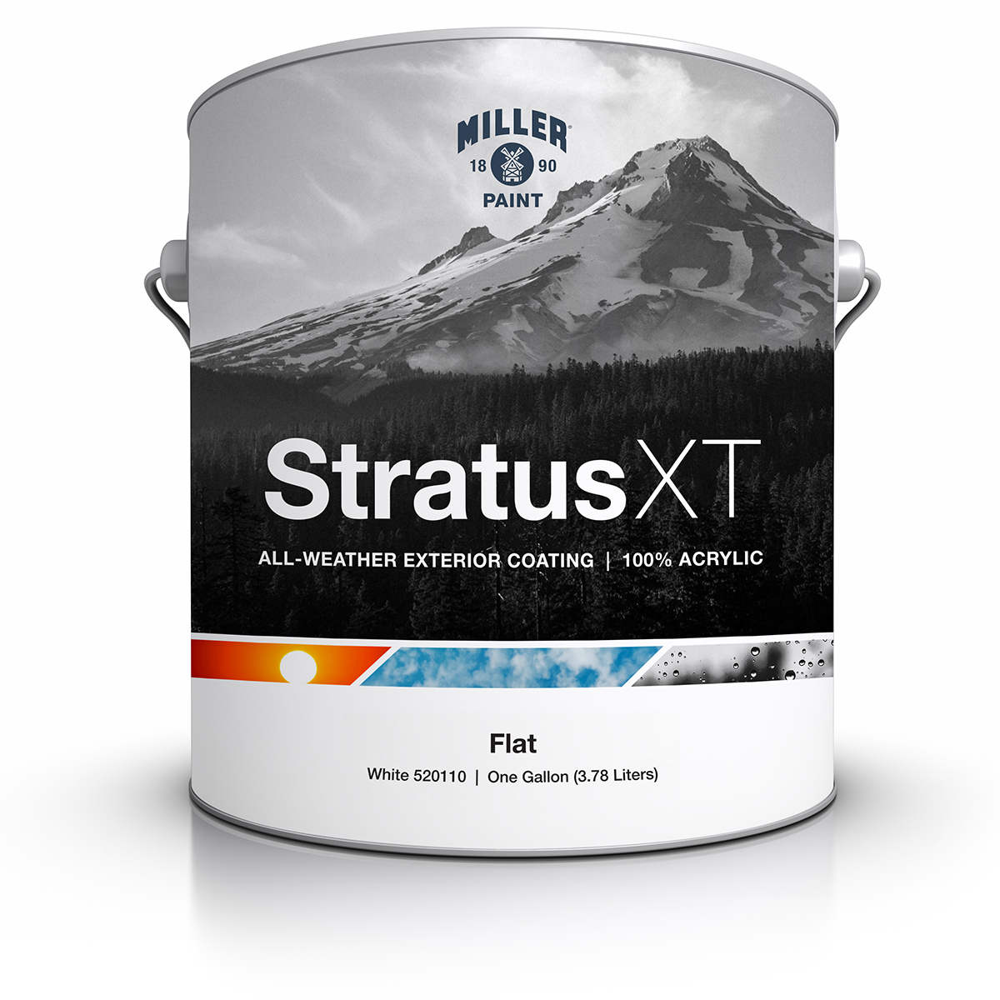

Exterior Siding & Trim Paint
为了保护您的房屋免受太平洋西北部严苛气候的侵袭而生，Stratus XT™ 是一款提供卓越色彩保持力和极致耐用性的 100% 纯丙烯酸外墙涂料。
它专为极端气候配制，能够轻松抵御从极度高温到高湿度的剧烈气候转变，是全年适用于任何商业或住宅建筑的理想之选。
Stratus XT 具有极佳的施工性，适用于大多数妥善处理过的外部基材，包括木材、混凝土、灰泥、金属及人造壁板，为您提供全天候的终极守护。
哑光 (Flat)： 提供无反光的表面，通过减少光线折射来最大限度地降低墙面瑕疵的可见度。它是粗糙基材或需要定期翻新表面的最佳选择。
涂刷面积： 每加仑约 250-400 平方英尺。建议涂刷两遍以获得最佳的外墙耐久性。实际覆盖率取决于外墙孔隙率。
环境要求： 表面和空气温度在施工期间及施工后 48 小时内应保持在 35°F 至 95°F 之间，且表面温度必须高于露点 5°F。若预计有大雨、雪或过度结露，请勿施工。
干燥时间： 1 小时表干，2 小时后即可重涂。
完全固化： 外墙纯丙烯酸涂层需要 14 至 28 天 才能完全交联固化并达到最大耐候性与附着力。
所有表面必须坚固、干燥且无灰尘、油污、蜡脂或霉菌。光滑的表面需轻轻打磨除光。新建混凝土或灰泥必须养护至少 30 天，测试含水率低于 12% 且 pH 值在 7-11 之间方可施工。
建议根据基材选用对应的 Miller 封闭底漆，例如：
- 木材： All Purpose Int/Ext Stain Blocking Primer 470011
- 金属： Acrimetal DTM Low Sheen Primer 310210